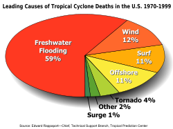

CYCLONE
In meteorology, a cyclone is a large scale air mass that rotates around a strong center of low atmospheric pressure.Cyclones are characterized by inward spiraling winds that rotate about a zone of low pressure.


The largest low-pressure systems are polar vortices and extratropical cyclones of the largest scale (the synoptic scale). Warm-core cyclones such as tropical cyclones and subtropical cyclones also lie within the synoptic scale.
Effect of cyclones
The main effects of tropical cyclones include heavy rain, strong wind, large storm surges near landfall, and tornadoes. Even well inland, heavy rainfall can lead to mudslides and landslides in mountainous areas.
The destruction from a tropical cyclone, such as a hurricane or tropical storm, depends mainly on its intensity, its size, and its location. Tropical cyclones act to remove forest canopy as well as change the landscape near coastal areas, by moving and reshaping sand dunes and causing extensive erosion along the coast. Even well inland, heavy rainfall can lead to mudslides and landslides in mountainous areas. Their effects can be sensed over time by studying the concentration of the Oxygen-18 isotope within caves within the vicinity of cyclones' paths.
Prediction
Meteorologists around the world use modern technology such as satellites, weather radars and computers etc. to track tropical cyclones as they develop. Tropical cyclones are often difficult to predict, as they can suddenly weaken or change their course.
The low pressure areas depressions and cyclones are routinely monitored using satellite, DWR and AWS data in real time. There has been significant improvement in the forecasting of cyclones track, movement and intensity during the past four years which has been achieved primarily due to implementation of high-resolution models and augmentation of capability to acquire and analyze all available atmospheric and ocean data. The average operational forecast error for 24 hours track forecast is about 140 km and landfall is 80 km. However, continuous efforts are underway to improve the forecasts further. This can be achieved through improved scientific understanding, enhanced observation network, generation of in-situ observations from the cyclone core and environment along with improved modeling techniques through collaborative research.
Forecasting
Tropical cyclone forecasting is the science of forecasting where a tropical cyclone's center, and its effects, are expected to be at some point in the future. There are several elements to tropical cyclone forecasting: track forecasting, intensity forecasting, rainfall forecasting, storm surge, tornado, and seasonal forecasting. While skill is increasing in regard to track forecasting, intensity forecasting skill remains nearly unchanged over the past several years. Seasonal forecasting began in the 1980s in the Atlantic basin and has spread into other basins in the years since.
Preparedness
Cyclone mitigation encompasses the actions and planning taken before a tropical cyclone strikes to mitigate damage and injury from the storm. Knowledge of tropical cyclone impacts on an area help plan for future possibilities. Preparedness may involve preparations made by individuals as well as centralized efforts by governments or other organizations. Tracking storms during the tropical cyclone season helps individuals know current threats. Regional Specialized Meteorological Centers and Tropical Cyclone Warning Centers provide current information and forecasts to help individuals make the best decision possible.